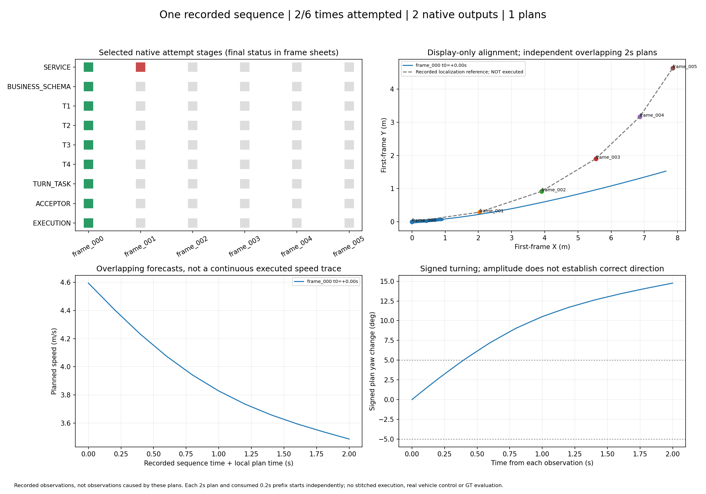
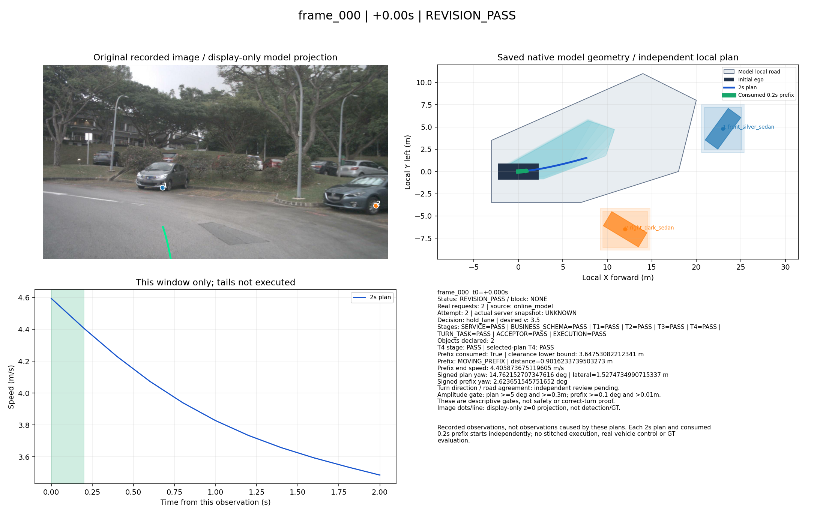
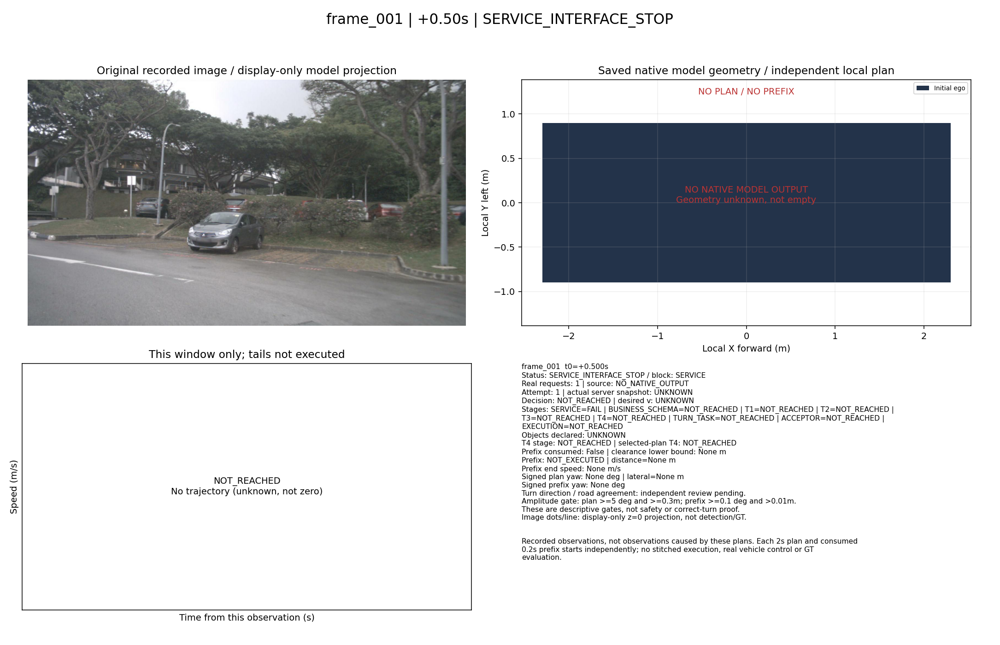
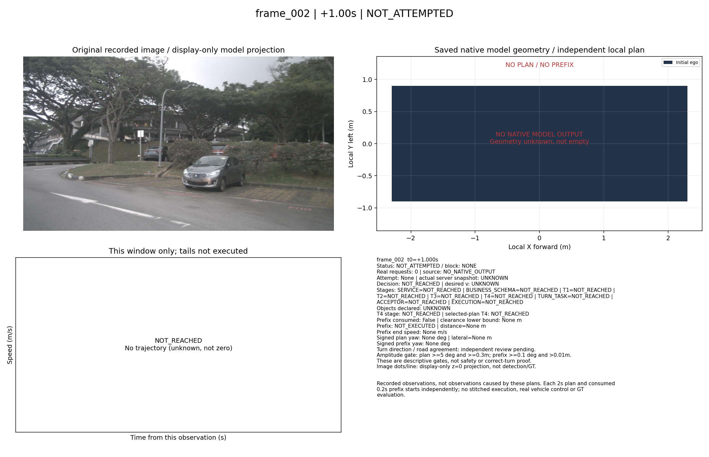
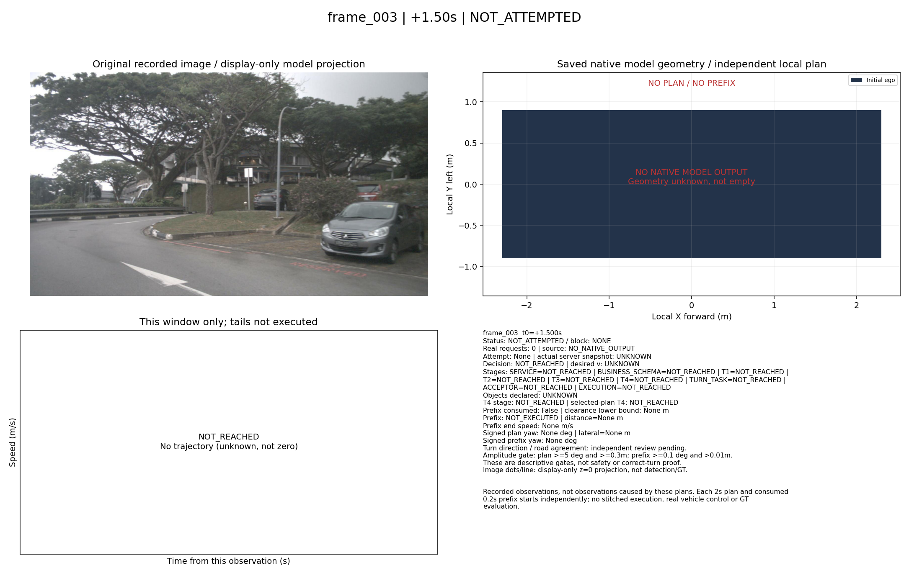
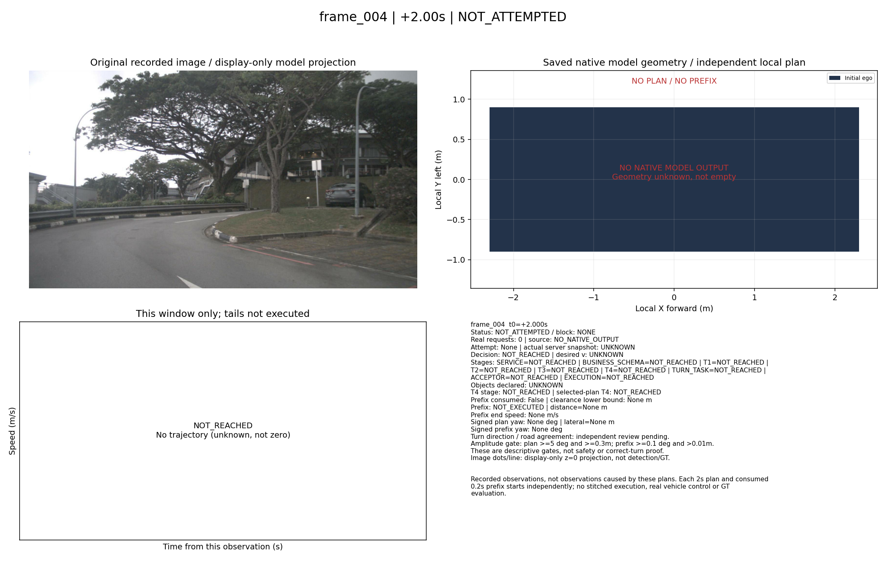
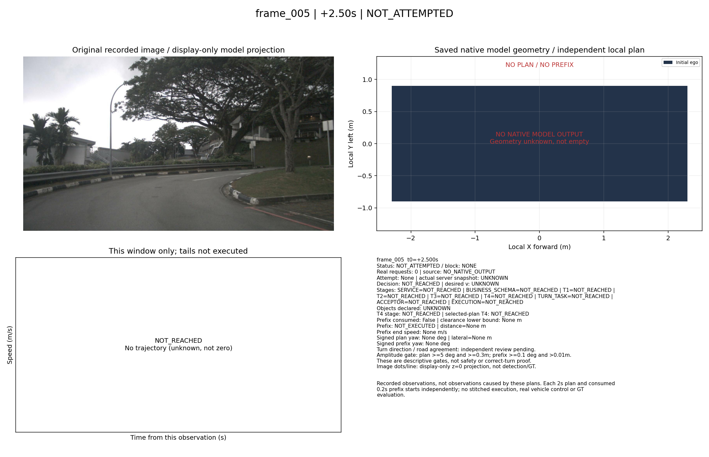

One recorded sequence | 2/6 times attempted | 2 native outputs | 1 plans
Recorded observations, not observations caused by these plans. Each 2s plan and consumed 0.2s prefix starts independently; no stitched execution, real vehicle control or GT evaluation.
GT未使用；方向与道路一致性需要独立阅图。灰色NOT_REACHED不计通过。






